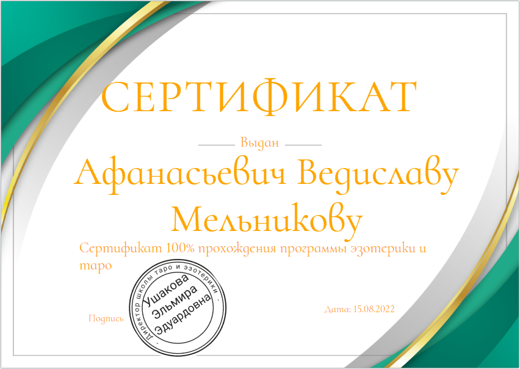

15 августа 2022 года стал для Меня особенным днем. Я всегда интересовался эзотерикой и мистикой,
С детства я чувствовал связь с картами и
их символикой, и теперь, после долгих раздумий, записался на курс по программе "Эзотерика и Таро".
Курс проходил в уютной студии, наполненной ароматом благовоний и тихими звуками медитативной музыки.
Преподавателем была известная тарологиня, которая делилась своим опытом и знаниями, помогая студентам
понять не только значения карт, но и их глубокую связь с интуицией и внутренним миром.
В течение месяца я изучал различные расклады, учился интерпретировать карты и развивать свою интуицию.
я проводил часы за практикой, делая расклады для себя и своих друзей, и с каждым разом чувствовал, как моя
уверенность растет.
15 августа, в последний день курса, все студенты собрались для финального занятия. Преподаватель провела
мастер-класс, на котором каждый смог продемонстрировать свои навыки. Я выбрал расклад "Кельтский крест" и,
глубоко вдохнув, начал интерпретировать свои карты. Я говорил о прошлом, настоящем и будущем, и мои слова
резонировали с моими слушателями, вызывая у них удивление и восхищение.
После завершения занятия преподаватель вручила мне сертификат о прохождении курса. Когда я получил свой
сертификат, я почувствовал, как внутри меня зародилась новая сила.
